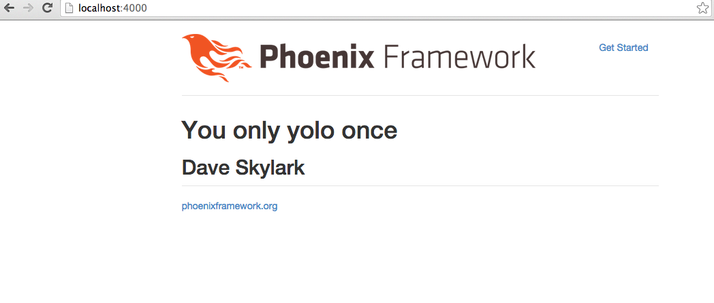

Our plan of attack should be to pull a random item from the database and then render the show page for the particular quote on the homepage action.
Ecto's query syntax is quite nice for simple queries. See an example here.
Unfortunately it doesn't allow us to perform an ORDER BY RANDOM() from SQL easily.
This means we'll need to craft a custom SQL query and load up a Splurty.Quote based on that.
Add the following module for queries, and method to pull out a random quote in web/models/quote.ex.
defmodule Splurty.Quote do
use Ecto.Model
schema "quotes" do
field :saying, :string
field :author, :string
end
defmodule Queries do
def random do
query = Ecto.Adapters.Postgres.query(
Repo,
"SELECT id, saying, author from quotes ORDER BY RANDOM() LIMIT 1",
[])
%Postgrex.Result{rows: [row]} = query
{id, saying, author} = row
%Splurty.Quote{id: id, saying: saying, author: author}
end
end
end
This will allow us to extract a random quote from our database by calling Splurty.Quote.Queries.random.
Let's hook this up in our controller. Edit web/controllers/quote_controller.ex to look like this:
defmodule Splurty.QuoteController do
use Phoenix.Controller
alias Splurty.Router
import Splurty.Router.Helpers
plug :action
def homepage(conn, _params) do
conn
|> assign(:quote, Splurty.Quote.Queries.random)
|> render("show.html")
end
def index(conn, _params) do
conn
|> assign(:quotes, Repo.all(Splurty.Quote))
|> render("index.html")
end
def new(conn, _params) do
render conn, "new.html"
end
def create(conn, %{"quote" => %{"saying" => saying, "author" => author}}) do
q = %Splurty.Quote{saying: saying, author: author}
Repo.insert(q)
redirect conn, to: quote_path(conn, :index)
end
def show(conn, %{"id" => id}) do
{id, _} = Integer.parse(id)
conn
|> assign(:quote, Repo.get(Splurty.Quote, id))
|> render("show.html")
end
def edit(conn, %{"id" => id}) do
{id, _} = Integer.parse(id)
conn
|> assign(:quote, Repo.get(Splurty.Quote, id))
|> render("edit.html")
end
def update(conn, %{"id" => id, "quote" => %{"saying" => saying, "author" => author}}) do
{id, _} = Integer.parse(id)
q = Repo.get(Splurty.Quote, id)
q = %{q | saying: saying, author: author }
Repo.update(q)
redirect conn, to: quote_path(conn, :show, q.id)
end
def destroy(conn, %{"id" => id}) do
{id, _} = Integer.parse(id)
q = Repo.get(Splurty.Quote, id)
Repo.delete(q)
redirect conn, to: quote_path(conn, :index)
end
end
Save the file and then go to the homepage. You'll notice a random quote is randomly shown. Sweet!
Let's clean up after ourselves and delete the file homepage.html.eex, since we're no longer using it.
$ rm web/templates/quote/homepage.html.eexYou're page should now look like this:
